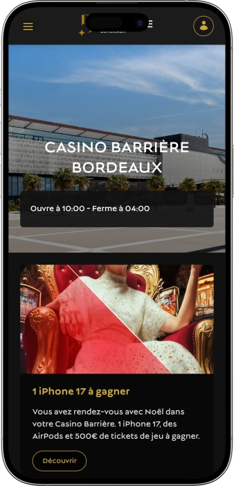

Offre de bienvenue exclusive de
Offre de bienvenue exclusive de
Casino Barrière Bordeaux — jeux, spectacles, bars et poker au même endroit
Top casinos
Détails du bonus
Casino
Bonus
Note
Tours gratuits
Plus d'infos
Obtenir
Avantages
-
350 machines à sous: classiques, vidéo, jackpots.
-
13 tables: roulette, blackjack, poker.
-
97 jeux électroniques pour rythme rapide.
-
Tournois de poker: intensité, structure, adrénaline.
-
Théâtre sur place: spectacles et concerts.
-
Bars et restaurant pour soirée complète.
-
Horaires étendus, accueil et confort.
- Le Casino Barrière Bordeaux se distingue par une expérience « tout-en-un » : jeux, restauration et scène réunis. On peut composer sa soirée selon ses envies, du jeu détendu aux tables et au poker. L’ambiance reste moderne, vivante et orientée divertissement, idéale pour une sortie complète.
Casino Barrière Bordeaux App


À propos Casino Barrière Bordeaux
Le casino se démarque par des jackpots progressifs marquants et des opérations de jeu régulières, qui multiplient les occasions de gain au-delà des mises. L’expérience « jeux + spectacles + bar » rend la sortie plus riche, plus complète et plus mémorable.
- Jackpot jusqu’à 1 010 681€.
- Lots: iPhone 17.
- 500€ en tickets.
Le Casino Barrière Bordeaux est un complexe de divertissement moderne qui réunit jeux, scène et gastronomie. L’ambiance y est urbaine et élégante, avec une mise en lumière soignée et une circulation fluide entre les espaces.
L’offre de jeu convient autant aux amateurs de machines qu’aux passionnés de tables avec croupiers. Le poker occupe une place à part, avec une dynamique de tournois et de rendez-vous réguliers. La programmation de spectacles et de concerts donne au lieu une dimension culturelle et festive. Des espaces bar et restauration permettent de faire des pauses sans quitter le rythme de la soirée. Le service privilégie le confort, la discrétion et l’efficacité. Les nouveaux visiteurs s’y repèrent facilement grâce à une organisation claire des zones. Les joueurs confirmés apprécient la variété des formats et la qualité du cadre. C’est une adresse pensée pour vivre une sortie complète, au-delà du jeu.
Casino Barrière Bordeaux : une soirée où le jeu rencontre la scène
Le Casino Barrière Bordeaux se vit comme un complexe urbain lumineux, pensé pour créer une vraie expérience. On n’a pas la sensation d’un simple hall de jeu : la mise en scène, la musique et la circulation des espaces donnent un côté événementiel. L’atmosphère est à la fois moderne et subtilement théâtrale, idéale pour ceux qui viennent chercher des émotions. Le soir, le lieu gagne en énergie et devient particulièrement vivant.
Côté horaires, le casino est pratique parce qu’il ne se limite pas à de courtes plages d’ouverture. Il accueille les visiteurs tous les jours du matin jusqu’à tard, ce qui permet une visite rapide comme une longue sortie. Ce rythme convient autant aux personnes de passage qu’à celles qui finissent un événement en ville. L’activité la plus dense se ressent souvent en soirée, lorsque l’ambiance est à son meilleur.
Les bars participent pleinement à l’identité du lieu. On peut s’y offrir un cocktail ou un verre de vin sans casser le tempo de la soirée. L’espace bar n’est pas seulement « un service », il agit comme un point de rendez‑vous pour les groupes. Le restaurant, lui, facilite un scénario complet « dîner → jeu → spectacle » sans déplacements inutiles.
L’un des grands atouts du Casino Barrière Bordeaux, c’est la scène et la programmation. Le théâtre sur place attire aussi un public non joueur : concert, humour, spectacle, puis prolongation au bar. Cette cohabitation des univers crée une ambiance de sortie « grand soir ». Les soirs de spectacles, le mélange des publics renforce l’intensité et la convivialité.
Pour l’hébergement, l’expérience se construit souvent avec les options disponibles à proximité, ce qui rend le site pratique pour des séjours courts. Le casino s’insère facilement dans un programme de week‑end, entre loisirs, gastronomie et sorties. L’essentiel reste à l’intérieur : jeu, restauration et divertissement. C’est ce trio qui donne envie de revenir, selon l’occasion.
Enfin, les avantages ne ressemblent pas à des « bonus en ligne » mais à des privilèges réels. Le programme Le Carré VIP vise le confort : accès facilité, cumuls et offres personnalisées. L’adhésion sert à rendre chaque visite plus fluide et plus avantageuse. Au final, l’établissement construit une relation durable avec ses visiteurs, et pas seulement une impulsion ponctuelle.
Service et paiements au Casino Barrière Bordeaux : fonctionnement clair
Au Casino Barrière Bordeaux, le personnel est généralement organisé par zones : accueil, caisse, machines, tables et équipe événementielle. Cela rend l’expérience plus simple, car chaque demande trouve rapidement le bon interlocuteur, des règles de jeu à l’inscription aux tournois. Le ton reste discret et professionnel, ce qui correspond à l’esprit d’un établissement de divertissement premium. Les nouveaux visiteurs sont souvent accompagnés avec pédagogie, sans pression.
Pour les langues, le français est naturellement le plus courant, et l’anglais de base peut aider dans un contexte touristique. Dans les zones de jeu, l’important est de comprendre les consignes essentielles, et l’équipe sait reformuler simplement si besoin. En poker, le vocabulaire international facilite aussi les échanges. Cette disponibilité réduit l’appréhension, surtout lors d’une première visite.
La monnaie utilisée est l’euro, ce qui simplifie le budget. Côté moyens de paiement, les établissements de ce type acceptent généralement espèces et cartes bancaires, notamment pour la restauration et les services. À la caisse, on transforme l’argent en jetons ou crédits de jeu, puis on peut reconvertir le solde. Les procédures d’identification et certains plafonds dépendent des règles internes et des obligations de sécurité.
Les retraits et opérations rapides sont souvent pensés pour éviter de quitter le site trop longtemps. Pour le change de devises, il est souvent plus pratique de s’en occuper en amont, car la capacité de change sur place peut être limitée selon l’infrastructure. Sur site, l’équipe indique volontiers les solutions les plus proches et les démarches rapides. C’est particulièrement utile quand on vient pour une soirée et qu’on veut rester dans le rythme.
Le paiement des gains se fait le plus souvent à la caisse : ticket gagnant, jetons ou validation système, puis versement en espèces ou selon la modalité proposée. Pour les montants élevés, une pièce d’identité et des informations complémentaires peuvent être demandées, ce qui relève de la conformité et de la sécurité. Il peut aussi arriver qu’une vérification ou un rendez‑vous de remise soit proposé pour garantir une procédure sereine. Un bon réflexe consiste à conserver tickets et justificatifs jusqu’à la finalisation.
Concernant l’imposition, un visiteur occasionnel n’a pas toujours une démarche spécifique à effectuer, mais les situations varient selon le statut et la nature des revenus. Pour un joueur « loisir », l’essentiel reste surtout de respecter l’identification lors des paiements importants. Pour une pratique professionnelle ou régulière, il est recommandé de demander un avis fiscal adapté. Le casino, lui, se concentre sur la procédure de paiement et les documents requis, tandis que le cadre fiscal dépend du joueur.
Règles de visite au Casino Barrière Bordeaux : tenue, accès et restrictions
La visite du Casino Barrière Bordeaux commence par un contrôle à l’entrée, il est donc essentiel d’avoir une pièce d’identité valide et de respecter les conditions d’âge. Un contrôle peut être demandé même si l’âge semble évident, c’est une pratique normale. La tenue attendue correspond à un style urbain soigné : le smart casual est la meilleure option, tandis que les looks trop « plage » ou trop sport sont à éviter. Le lieu privilégie le calme et le respect, les comportements agressifs ou bruyants ne sont pas appréciés. Des règles de jeu responsable et de sécurité s’appliquent, y compris pour les personnes faisant l’objet d’une interdiction. La photo et la vidéo peuvent être limitées, surtout près des tables, afin de protéger la confidentialité. La consommation d’alcool est encadrée : le service peut être refusé en cas d’ivresse manifeste. Il est interdit de perturber les croupiers ou d’interférer avec la partie d’autrui. Le poker et les tournois peuvent avoir des règles d’inscription spécifiques. Si vous venez en voiture, anticipez le stationnement pour éviter les pics. En transport urbain, prévoyez votre arrivée selon la dynamique du soir et l’horaire du spectacle.
Tenue (dress code) :
- • Smart casual recommandé pour une entrée fluide.
- • Évitez tongs, tenue de plage et ensembles trop sportifs.
- • En soirée, une tenue plus « ville » est préférable près des tables.
Conditions d’accès :
- • Pièce d’identité valide obligatoire.
- • Conditions d’âge strictes, contrôles possibles à tout moment.
- • Respect du règlement intérieur et des consignes de sécurité.
Interdictions et limites :
- • Photos/vidéos en salle de jeu limitées sans autorisation.
- • Interdiction de gêner joueurs, croupiers ou personnel.
- • Accès pouvant être refusé en cas de trouble ou d’ivresse.
Parking et accès :
- • En voiture, arrivez plus tôt les soirs de spectacle.
- • Transports urbains pratiques pour une sortie du soir.
- • Gardez une marge de temps si vous allez au théâtre.
Le Carré VIP au Casino Barrière Bordeaux : privilèges, inscription et bonus
Le programme de fidélité Le Carré VIP au Casino Barrière Bordeaux s’adresse à celles et ceux qui veulent tirer davantage de chaque visite. Le principe est simple : utiliser la carte pendant le jeu et dans les espaces de restauration, cumuler des points, puis les convertir en avantages concrets. Le programme agit comme un accélérateur de confort : entrée plus fluide, service plus personnalisé, offres mieux ciblées. Les cumuls peuvent provenir des jeux comme des moments de pause au bar ou au restaurant, ce qui rend l’expérience globalement plus rentable.
Une force du Carré VIP réside dans ses statuts, qui ouvrent des niveaux de bénéfices différents. On retrouve des niveaux Blanc, Argent, Or et Noir, avec un enrichissement progressif des privilèges. Plus votre activité est régulière, plus votre statut monte, et plus les offres deviennent qualitatives. Concrètement, cela se traduit par des priorités, des invitations et des propositions sur mesure.
L’inscription est pensée pour être rapide : adhésion, carte, puis utilisation à chaque visite. Pour les visiteurs sensibles au gain de temps, la carte peut faciliter l’entrée et l’identification, rendant le parcours plus agréable. L’écosystème propose aussi un suivi numérique via application, utile pour surveiller points et statut.
Les avantages du Carré VIP ne sont pas des « points abstraits », mais des options d’échange réelles. Les points peuvent généralement servir à obtenir des crédits de jeu, à régler une partie d’une addition au bar/restaurant, ou à accéder à des privilèges liés aux loisirs. Des exemples de bienvenue et de remises peuvent apparaître dans certaines communications ; les montants exacts dépendent des conditions en vigueur. Pour un site, l’essentiel est d’expliquer clairement le mécanisme « cumuler → échanger », tout en rappelant que les chiffres peuvent évoluer.
Conditions d’inscription :
- • Pièce d’identité et formulaire d’adhésion à l’accueil.
- • Remise d’une carte Le Carré VIP pour l’usage sur place.
- • Activation d’un profil digital (souvent via application) pour suivre les points.
Statuts et obtention :
- • Blanc — niveau d’entrée dès l’adhésion, avantages de base.
- • Argent — obtenu via visites régulières et accumulation de points statut.
- • Or — destiné aux joueurs actifs, plus d’offres personnalisées.
- • Noir — statut supérieur, privilèges et services renforcés.
- • À noter : les seuils de passage peuvent varier selon le barème.
Bonus et avantages
- • Crédits/jetons via points — exemple : équivalent 5€–20€ selon le palier.
- • Remises sur événements — exemple : offres autour de 10% sur certains billets.
- • Bienvenue — exemple : avantage de départ équivalent 5€ selon période.
- • Offres personnalisées — journées à points boostés, invitations, opérations ciblées.
- • Confort — entrée facilitée/identification plus fluide, relation prioritaire à l’accueil.
Fournisseurs de logiciels
Divertissement et jeux au Casino Barrière Bordeaux
Bonus et offres au Casino Barrière Bordeaux : jackpots, lots et opérations saisonnières
Dans un casino terrestre, les bonus prennent souvent une forme différente du digital : il s’agit d’opérations réelles, de tirages, d’événements et de mécaniques qui rendent la visite plus excitante. Le Casino Barrière Bordeaux mise sur des raisons concrètes de venir : jackpots progressifs, périodes thématiques, animations de fêtes. Pour le joueur, cela signifie davantage de scénarios de gain : la partie elle‑même, mais aussi des opportunités additionnelles via les opérations promotionnelles.
Les jackpots élevés créent un vrai « moment » : on vient parce que la cagnotte est déjà attractive et qu’on veut tenter sa chance au bon timing. En parallèle, des campagnes cadeaux (high‑tech, tickets de jeu) renforcent la dimension événementielle. La partie divertissement joue aussi : dîner‑concert, soirées à thème, programmation, avec parfois des avantages associés.
Les conditions exactes évoluent selon la période, mais la logique reste lisible : offres régulières (jackpots, tournois, soirées) et temps forts saisonniers (fêtes, tirages spéciaux). Voici une cartographie claire des types d’offres, illustrée par des chiffres‑exemples.
- • Jackpot progressif machines à sous — exemple de montant affiché : 1 010 681€ ; ces cagnottes montent et peuvent devenir le cœur de l’expérience.
- • Tirages cadeaux — exemples : iPhone 17, AirPods, et 500€ en tickets ; souvent liés aux périodes festives.
- • Soirées tournois poker — buy‑ins pouvant démarrer autour de 40€–150€, pour accueillir différents profils de joueurs et créer du challenge.
- • Dîner‑concert / dîner‑spectacle — formule « repas + scène », généralement conseillée en réservation, idéale pour une sortie complète.
- • Semaines thématiques & saisons — loteries, soirées spéciales, temps forts, où lots et cadeaux dépendent de l’activité.
- • Défis de jeu & mini‑missions — exemples : tickets additionnels, avantages bar, équivalent 5€–20€ selon campagne (montants variables).
Jeux populaires au Casino Barrière Bordeaux : les incontournables
L’offre de jeux du Casino Barrière Bordeaux repose sur un équilibre : la tradition pour les amateurs de classiques et le digital pour ceux qui aiment le rythme. Le choix le plus fréquent reste la machine à sous, car elle offre un accès immédiat, des thèmes variés et une mécanique simple. Les jackpots progressifs renforcent l’attrait : on ne joue pas seulement, on « chasse » un moment où la cagnotte devient très tentante.
Les tables en direct forment l’autre pilier, avec une dimension sociale et scénique. La roulette séduit par son rituel et sa tension, tandis que le blackjack attire les joueurs qui aiment décider et optimiser. Le poker possède une culture à part : tournois et rendez‑vous créent une communauté fidèle.
Les jeux électroniques font le lien : règles proches des classiques, mais rythme plus rapide et entrée plus accessible. Ils sont parfaits pour multiplier les parties dans une même soirée. Les nouveaux visiteurs s’y sentent à l’aise, et les joueurs confirmés les utilisent pour varier le tempo. On peut ainsi construire une soirée progressive, du plus simple au plus intense.
- • Machines à sous — choix large, démarrage rapide, jackpots possibles, styles de jeu variés.
- • Blackjack — table classique pour stratégie, décisions et gestion du risque.
- • Blackjack électronique — version rapide, idéale pour rythme soutenu.
- • Roulette anglaise — roulette traditionnelle, ambiance forte, suspense constant.
- • Roulette anglaise électronique — format plus rapide, contrôle facile des mises.
- • Texas Hold’em — poker phare, très présent en tournois et en jeu structuré.
- • Ultimate Poker — poker dynamique, décisions rapides, expérience nerveuse.
Mises au Casino Barrière Bordeaux : minimums et maximums par jeu
Avant de visiter le Casino Barrière Bordeaux, connaître les fourchettes de mises aide à choisir ses jeux selon son budget. Dans un casino terrestre, les limites varient selon la table, l’horaire et l’affluence ; le tableau ci‑dessous donne donc des repères typiques. Les machines à sous offrent en général la plage la plus large, tandis que les tables suivent des minimums plus structurés. Pour une expérience plus « haute intensité », privilégiez les tables à limites élevées et les jackpots ; pour un jeu plus doux, les formats électroniques sont un bon point de départ.
| Jeu | Mise minimale | Mise maximale |
|---|---|---|
| Machines à sous | 0,01€ | 10€ par spin |
| Roulette anglaise (table) | 2,50€ | 500€ par mise |
| Blackjack (table) | 5€ | 500€ par main |
| Texas Hold’em (buy‑in tournois) | 40€ | 150€+ |
| Ultimate Poker (table) | 5€ | 300€ |
| Roulette électronique | 0,10€ | 100€ |
| Blackjack électronique | 0,50€ | 100€ |
Spectacles, soirées et divertissements au Casino Barrière Bordeaux : l’expérience complète
Le Casino Barrière Bordeaux se distingue par une vraie programmation « hors jeu ». Le théâtre sur place transforme le lieu en destination de sortie : on vient pour un concert, de l’humour, une pièce ou un show, puis on prolonge la soirée. Cela change la perception : le casino devient un espace de divertissement global, et pas uniquement un lieu de mise. Cette dimension culturelle attire un public varié et dynamise l’ambiance.
Les animations régulières s’articulent souvent autour du rythme du soir : thématiques, musique, moments de convivialité. Le parcours se fait naturellement par étapes : bar, jeu, spectacle, puis retour au bar. Cette alternance convient aussi bien aux novices qu’aux habitués, car chacun peut choisir son intensité. L’expérience se construit « à la carte » selon l’envie du moment.
Pour la nuit, l’idée n’est pas forcément un club séparé, mais une énergie club dans les espaces bar : DJ sets, soirées, thématiques, événements saisonniers. C’est plus accessible pour un public large : on profite d’une ambiance nocturne sans changer d’adresse. Les soirées se marient bien avec des opérations ponctuelles, lots et tickets, qui renforcent l’effet événementiel.
Les temps forts prennent toute leur ampleur lors des grandes dates et périodes festives. On observe alors davantage de thématiques, une scène plus active, et une ambiance plus collective. Pour une sortie intense, choisir un soir avec spectacle et animation bar est souvent la meilleure stratégie.
Tous les divertissements
- • Théâtre & scène — concerts, humour, spectacles et programmations spéciales.
- • Soirées & formats DJ — nuits thématiques, sets musicaux, ambiance « club » au bar.
- • Événements poker — tournois et rendez‑vous, divertissement compétitif.
- • Saisons thématiques — semaines festives, soirées spéciales, tirages et événements datés.
- • Moments bar — cocktails, convivialité, pauses entre sessions sans quitter le site.
Restaurants, bars et détente au Casino Barrière Bordeaux : une soirée confortable
La détente au Casino Barrière Bordeaux repose sur un principe simple : garder le rythme sans multiplier les déplacements. On peut dîner, boire un verre, puis revenir au jeu en quelques minutes, ce qui rend la soirée plus fluide. Le restaurant aide à structurer la sortie : on commence par un repas, on passe au jeu, puis on prolonge avec un spectacle ou un moment au bar. En groupe, c’est particulièrement agréable, car chacun peut entrer dans l’expérience à son rythme.
Les bars jouent un rôle central dans l’identité du lieu. La pause cocktail permet de ralentir, discuter, célébrer un gain ou simplement respirer. Cette dimension conviviale transforme le casino en véritable destination de sortie, pas seulement en espace de jeu. C’est un point fort pour une présentation orientée expérience.
Pour une visite type « mini‑séjour », il est souvent pratique de compléter la soirée par un hébergement à proximité. Cela permet d’arriver sans stress, surtout les soirs de spectacle, et de profiter pleinement du programme. On obtient alors une expérience complète, plus détendue, plus festive.
Les meilleurs soirs sont ceux où restauration, bar et divertissement se répondent. Entre dîner tranquille et ambiance plus vive, chacun peut composer son scénario. L’adresse prend tout son sens quand on la vit comme un ensemble : gastronomie, atmosphère et jeu.
Tous les espaces de détente
- • Café Barrière (restaurant) — idéal pour dîner et faire une pause avant le jeu ou le spectacle.
- • Le Led&Bar (bar) — cocktails et ambiance de soirée, parfait pour se retrouver entre amis.
- • Espaces bar complémentaires — selon les soirées, points de service proches des zones de jeu pour rester dans l’action.
- • Hôtels à proximité — solution pratique pour une sortie tardive ou un week‑end sans contrainte.
FAQ
Oui, beaucoup de visiteurs viennent pour le bar, le restaurant ou le spectacle, mais les règles d’accès et le contrôle d’identité peuvent s’appliquer selon les zones.
En général, ces complexes prévoient des accès adaptés, notamment autour du théâtre et des espaces publics, mais il est utile d’anticiper le parcours.
Le plus souvent non, pour des raisons de règlement intérieur et de sécurité ; la consommation se fait sur place.
En général non, mais en cas de trouble, d’ivresse ou de non‑respect, l’établissement peut demander de quitter la salle.
Oui, les casinos proposent habituellement des démarches de jeu responsable : auto‑limitation, information et accompagnement via l’accueil.